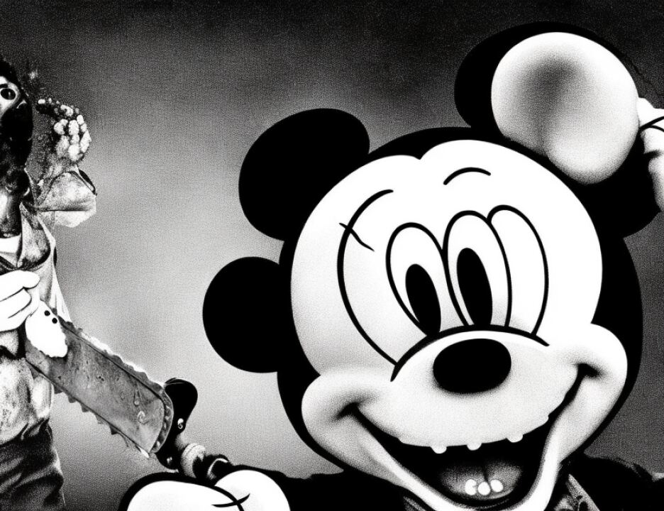

17 true. It also helps to set the timing. We are not trying to
18 argue to the jury because Mr. El Hage bought a dog he's a
19 dangerous person.
20 THE COURT: Is there any suggestion that the dog was
21 an attack dog?
22 MR. FITZGERALD: No, Judge. There were dogs that
23 were sent, other dogs that would be sent to Khartoum to be
24 trained. They weren't bought as trained attack dogs. We
25 won't contend that. No one is going to argue that Mr. El Hage
4176
1 is a dangerous person because he possessed a dog and I don't
2 think putting a picture of a girl next to a dog in there is
3 necessary to rebut any argument not being made.
4 THE COURT: What probative value does this have?
5 It's a cute picture. The jury certainly has not seen cute
6 pictures, but --
7 MR. SCHMIDT: Your Honor, it simply is for the
8 purpose of showing that the contact between Mr. El Hage and
9 Mr. Bin Laden concerning the dogs was not sinister, was not
10 criminal, it was not related to viciousness. This is his pet.
11 THE COURT: Do you know the age of the dog?
12 MR. SCHMIDT: Excuse me?
13 THE COURT: Do you know the age of this dog? Do you
14 know how large this dog would be? Do we know the height of
15 the child? Do we know anything about the dog?
16 The objection is sustained on the grounds that the
17 photograph has no probative value with respect to the issues
18 for which it is proposed, and it's simply a cute picture of a
19 child and a dog. The impact on the jury would not be proper
20 or relevant to the issues here which you propose. Mark this
21 as an exhibit for identification so that the record will make
22 this colloquy more meaningful.
23 MR. SCHMIDT: Your Honor, does that mean that we will
24 be able to bring a redacted photo of this with just the dog?
25 THE COURT: No, for the same reason I just stated.
4177
1 Let's bring in the jury, please.
2